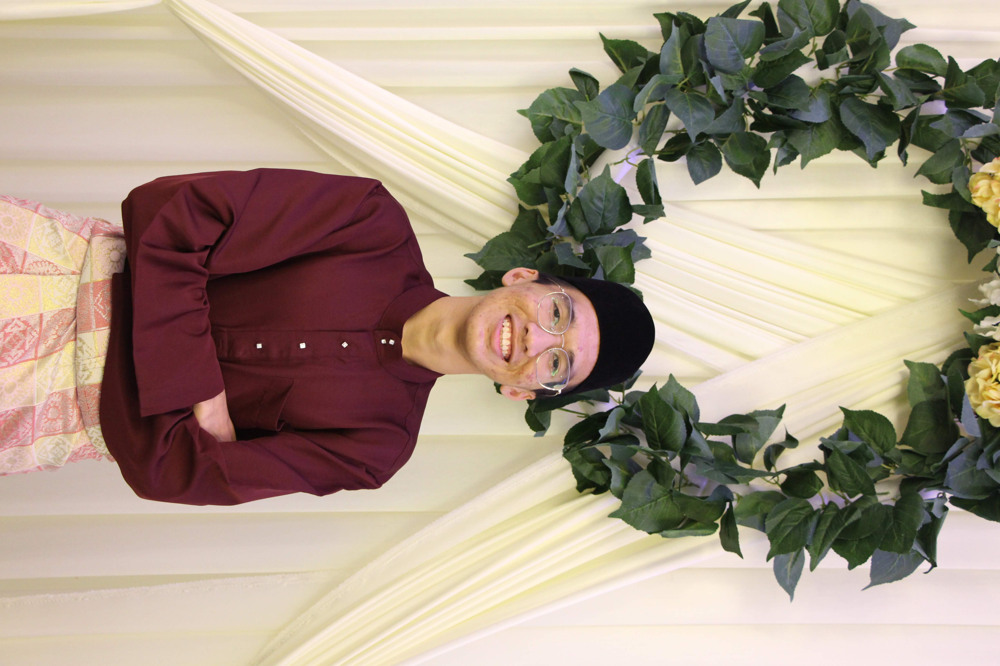

Afi Hillman Zamlis
Software Engineer
Sungai Buloh, Selangor
011-1234 0704 | afi.hillman17@gmail.com
linkedin.com/afi-hillman
github.com/afi-hillman
EDUCATION
University of Malaya (Kuala Lumpur, Malaysia)
Bachelor of Mechanical Engineering | September 2018 - July 2022
- CGPA: 3.31 / 4.0
- Relevant Coursework: Nanotechnology in Green and Sustainable Energy, Energy Conversion & Efficiency, Design and Modelling with CAD, Automation and Robotics, Control Engineering, Internal Combustion Engines, Manufacturing Planning and Control, Reverse Engineering, Programming, Thermodynamics, Fluid Mechanics.
University of Malaya (Kuala Lumpur, Malaysia)
Foundation in Physical Sciences | June 2017 - April 2018
- CGPA: 3.96 / 4.0
- Malaysian University English Test (MUET):Band 5
SMK Bandar Sri Damansara 1 (Petaling Jaya, Malaysia)
Science Stream | January 2012 - December 2016
WORK AND LEADERSHIP EXPERIENCE
Projek Lintasan Kota Holdings Sdn. Bhd. (PROLINTAS) (Sungai Buloh, Malaysia)
Operations Protege | November 2022 - June 2023
- Responsible for overseeing and analyzing traffic and revenue data for three (3) toll plazas under Guthrie Corridor Expressway (GCE).
- Mentored by Operations Manager to streamline data entry for highway traffic reports, reducing time spent on each report and utilizing Microsoft Excel.
- Assessed highway traffic data and revenue to liaise with the Finance Department, Touch ‘n Go, RFID, and Lembaga Lebuhraya Malaysia (LLM).
IDS Medical Systems (M) Sdn. Bhd. (Shah Alam, Malaysia)
Engineering Intern | July 2021 - October 2021
- Engaged in back-end corporate projects of the company by rotating between Engineering, Product & Development, Projects, and Marketing departments to gain experience on the finance and business administration sectors. Supported senior engineers with Pre-Delivery Inspections (PDI), Testing & Commissioning (T&C), Preventive Maintenance and Corrective Maintenance.
- Quantified and researched the trends in medical consumables along with product pipeline opportunities and new product recommendations for the Product and Development department.
Reserve Officer Training Unit (ROTU) ARMY UM (Kuala Lumpur, Malaysia)
Senior Level Head Secretary, Intake 40 | September 2018 - September 2022
- Commissioned as 2nd Lieutenant with sufficient military knowledge, conferred by the Crown Prince of Pahang (10th September 2022).
- Managed the administrative duties, guaranteeing compelling records of the senior level intake, consisting of 59 cadet officers.
- Cooperated with the treasurer to govern the wages of the senior level intake.
- Supervised the secretaries of the junior and intermediate level intake to guide them through the responsibilities of the secretarial position.
- Restructured the attendance system to increase its efficiency and effectiveness.
Festival Konvokesyen Universiti Malaya (FESKUM) (Kuala Lumpur, Malaysia)
Sponsorship Manager & Head of Technical Support | April 2019 - November 2019
- Coordinated a 2-week haunted house program (UMAYESCAPE) with over 800++ participants under FESKUM, the most prestigious annual university event under University of Malaya.
- Actively negotiated and landed multiple sponsorship deals from various companies totalled RM5000++ for UMAYESCAPE in a team of two (2).
- Successfully created sponsorship proposals that led to 100% success rate in securing sponsors.
- Headed the technical team of five (5) people to administer the audio management, lighting, and overall flow of the program.
LANGUAGES, SKILLS & INTERESTS
Languages: Fluent in English and Bahasa Malaysia
Technical Skills: SOLIDWORKS, Basics in Programming (C++, Python), Microsoft Office (Word, Excel, Powerpoint), LabVIEW, ANSYS, AutoCAD, MATLAB
Interests: Esports, Badminton, Photography